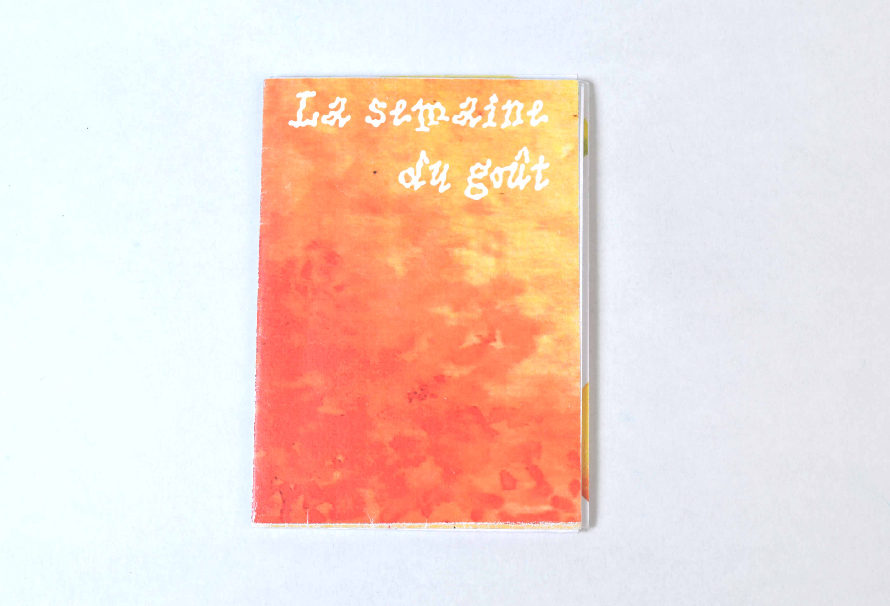
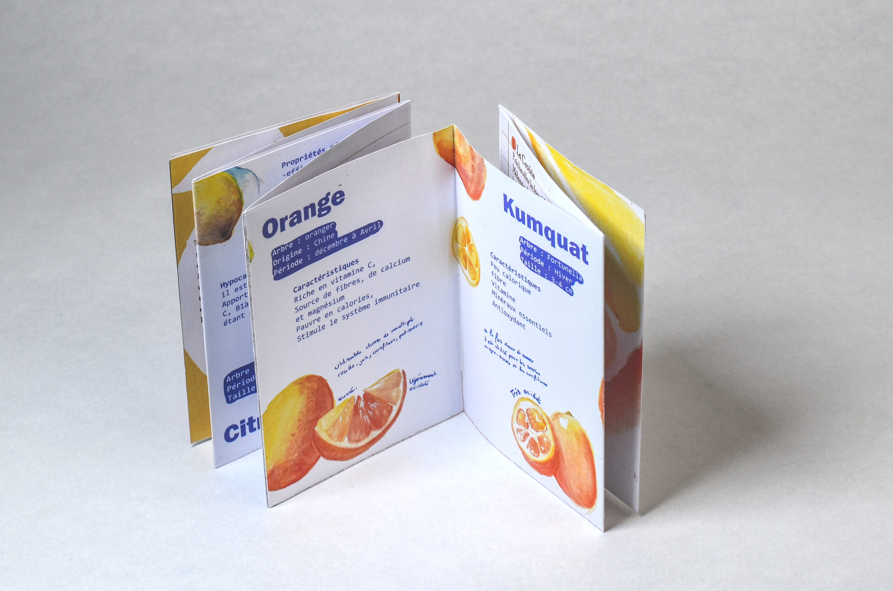
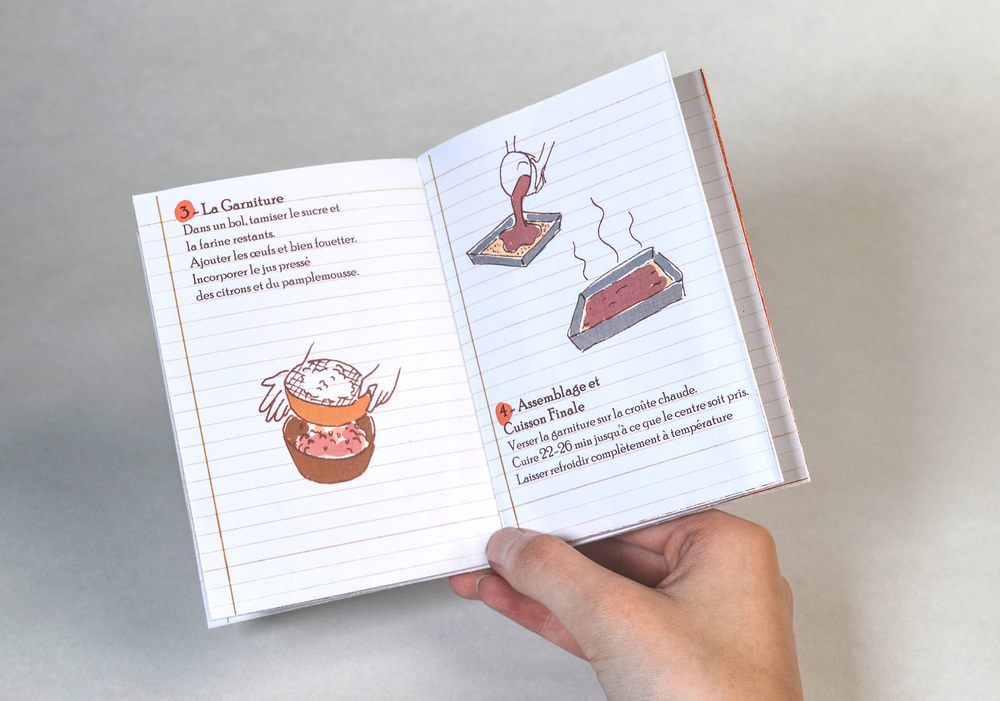

Conception d’un dépliant destiné à la jeunesse afin de éduqué sur une famille de aliments. Pour la présentation de la famille des agrumes d’une manière ludique, les aliment sont de manière appétissante et juteuse à travers des illustrations Wafin de développer l’intérêt du jeune. Pour développer cet intérêt par la pratique, une recette de gâteau facile est donnée à l’arrière.


